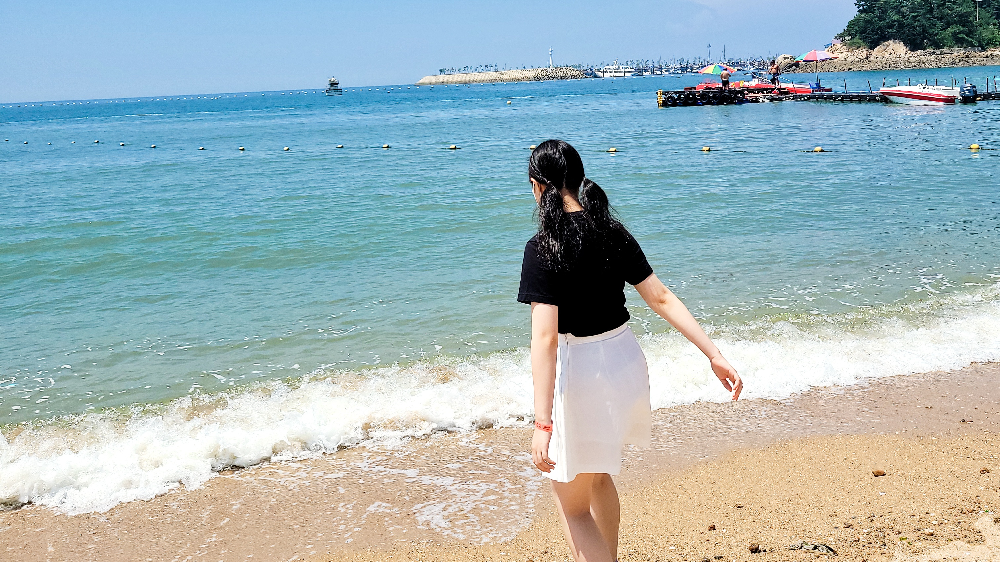
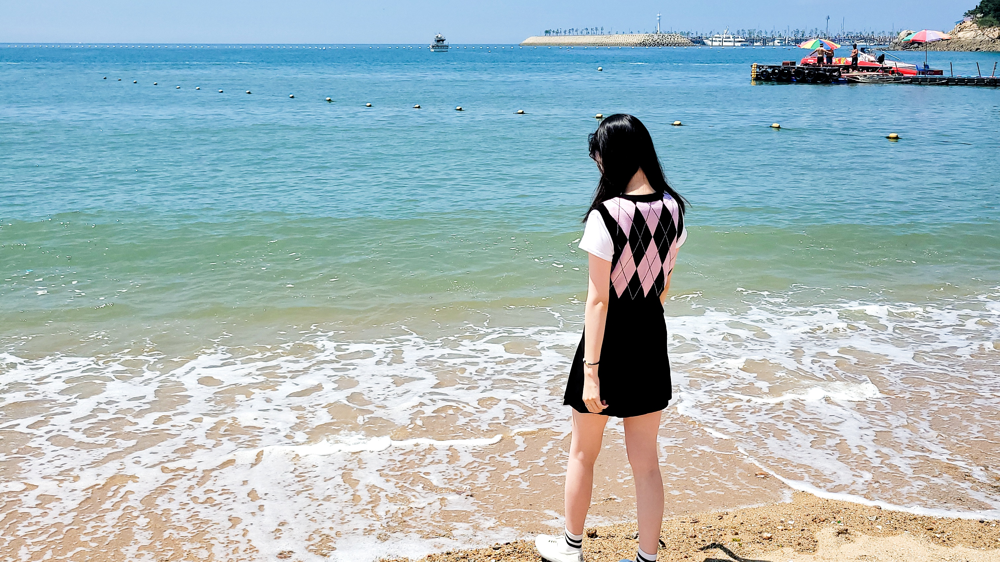
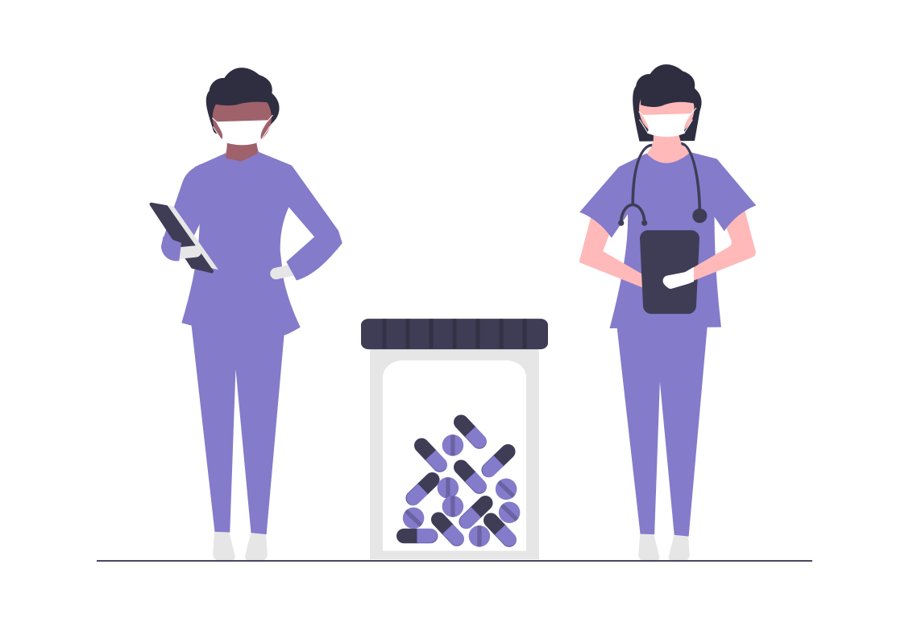

한 달에 한 번, 바쁘다 바빠 울 가족 정보를 요약해주는 달月소수!
첫 뉴스레터를 구독해 주신 여러 분을 환영해요🙌 오늘 소개하는 8월의 소식!! 즐겁게 만나보세요😇
💡 이달月의 체크 포인트✅
✔️바다보러 갈래! <왕산해수욕장>✔️여름방학 끝났다! <비대면 개학>
✔️나도 백신 맞았슈! <백신 접종>
왕산해수욕장🌊
 
8월 5일에 간 '왕산 해수욕장'이에요!
여름이 지나기 전에 꼬까옷 입고
사진 찍어야지~하며 찾아간 곳!
🙃워터파크 파도풀에만 익숙한
정인이는 불규칙적인 파도에 그만
신발이 다 젖어버렸다는 사실!
그런데 그 신발......언니꺼에요.......😨
여름방학 끝났다!✍️

정인이가 다니는 인천중산중학교는 지난 8월 17일 개학을 했어요!
원래는 대면 수업이었지만
'사회적 거리두기' 격상에 따라
비대면으로 바뀌었는데요😥
작년부터 비대면 수업에 익숙해진
학생들은 환영하는 분위기였죠.
어차피 Google Meet로 선생님과 친구들 얼굴을 실시간으로 볼 수 있으니까요!😋
🙋'교육부가 4단계여도 전면등교
시킨다고 하지 않았어?'
맞아요. 방학 내내 '등교수업 확대'를 외치는 교육부 때문에 혼란이 왔었죠.
그래서 찾아봤슈!🔎
📚2학기 전면등교에 따른
교육부 지침📚
"방역 등 준비가 완료되는
9월6일부터는 거리두기 1~3단계에 적용되는 지역의 모든 유치원 및
초·중·고등학교가 전면 등교한다.
거리두기 4단계인 지역의 경우에도 학교급별 3분의 2까지 등교허용되는 등 2학기 대면 수업이 확대된다."
드디어 나도 백신 맞았슈!💉

8월 17일 희지의 백신 접종을 시작으로 8월 26일에는 아빠가 백신 1차를 접종 완료했습니다!👏
다행히 두 명 다 멀쩡하게 1차 접종을 마무리 지었는데요.
아빠🐶는 접종 당일에 샤워를 했지만 멀쩡!😂
희지🐍는 접종 다음 날에 뮤지컬을 보러 갔지만 멀쩡!😂
그래도 2차 접종 땐 조심하기로 해요.
이달月의 TMI🧐💬💭
잠깐! 다음 달月 주요 뉴스⏰
💎9월 03일(금)~9월 10일(금)
정인🐷 학교 등교🚶
💎9월 13일(월)
엄마🐯 1차 백신 접종
💎9월 20일(월)~9월 22일(수)
추석연휴
💎9월 24일(금)
희지🐍 대학 대면 수업
아빠🐶 2차 백신 접종 (미정)
💎9월 29일(수)~9월30일(목)
정인🐷 2학기 중간고사
달月소수 뉴스레터 어떠셨나요?
오늘도 달月소수와 함께 해줘서 고마워요. 안녕!